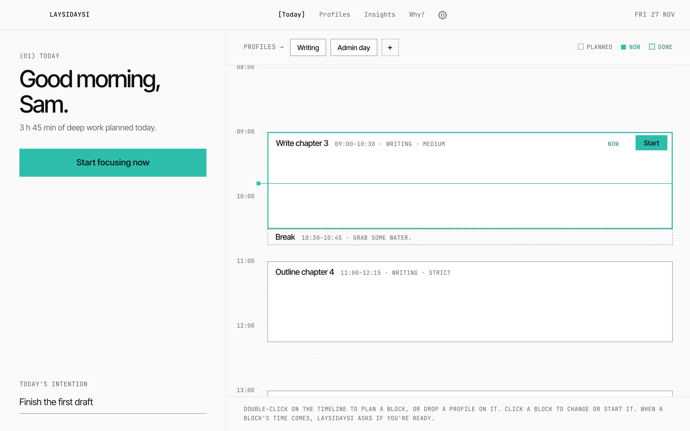

(01)
Plan your day
Double-click on the timeline to make a timebox, or drop a profile on it. When its time comes, Laysidaysi asks if you're ready.
(00) Timeboxing with distraction protection · macOS + Firefox + Chrome + Safari soon
Plan your day in timeboxes. During a block, only the apps and websites you chose stay open. Calm and kind.
Free · macOS 13 or newer · Version 0.1.0

(01) How it works
Each one shows a single idea. The app explains itself the first time you open each screen, too.
(01)
Double-click on the timeline to make a timebox, or drop a profile on it. When its time comes, Laysidaysi asks if you're ready.
(02)
A profile is a kind of work. Allow only the few apps and sites you need, or block only the ones that pull at you.
(03)
Reach for something else and Laysidaysi kindly asks: “Do you need this right now?” Gentle, medium or strict, you choose.
(04)
Finished blocks turn green. Rate the session, leave a note for later you, and watch your deep work hours grow.
(02) In three steps
Lay out your day as timeboxes and breaks.
During a block, only your profile's apps and sites stay open.
See what you did, what pulled at you, and how it felt.
(03) Why?
You don't need more time. You need your time back.
In studies by Gloria Mark at UC Irvine, the average time people stayed on one screen at work fell from about 150 seconds in 2003 to about 47 seconds in more recent years. About half of those interruptions we start ourselves.
[Read why focus matters →](04) Download
Timeline, profiles, sessions and insights. Lives in your menu bar.
Download .dmgChecks websites during a block and adds a site to a profile in one click.